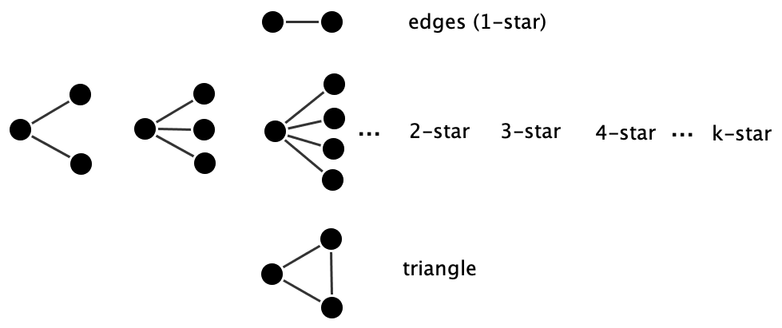
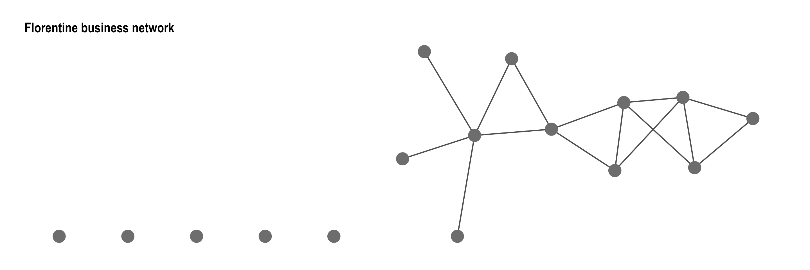

library(statnet)
library(intergraph)
library(igraph)
library(ggraph)
library(graphlayouts)
library(networkdata)
library(tidyverse)17 Exponential Random Graph Models (ERGMs)
So far, the models we’ve considered have treated tie formation as mostly random or locally constrained: ties are formed with fixed probabilities (\(G(n, p)\)), rewired at random (small-world), or arranged to match node degrees (configuration model). However, real-world networks are shaped by richer and more structured processes. People don’t form ties independently or at random, they’re influenced by patterns like mutual friendships, popularity, shared group membership, and social norms like reciprocity and transitivity. For example, two people who share a common friend may be more likely to form a tie themselves (triadic closure), or individuals may be more likely to reciprocate a connection that is initiated by someone else. These kinds of dependencies are central to many social theories, and they give rise to complex patterns of self-organization in networks.
To capture these processes, we need a more flexible modeling framework—one that allows for:
- Multiple network features to be modeled simultaneously
- Direct specification of tie dependencies
- Testing of competing social mechanisms
This leads us to models that are built around network configurations, i.e. small, interpretable patterns of ties (such as mutual ties, stars, and triangles) that collectively describe the structure of the network. These configurations are often nested, meaning they build on one another hierarchically, and they can represent competing explanations for the observed structure. For instance, both reciprocity and popularity could explain why a node has many incoming tie, but these explanations imply different underlying processes.
Exponential Random Graph Models (ERGMs) provide a flexible way to model these kinds of patterns. Instead of assuming each edge forms independently, ERGMs allow the probability of a tie to depend on what else is happening in the network. For example, the likelihood of a tie forming between two nodes may increase if they share mutual connections (triadic closure), or decrease if one node is already connected to many others (crowding out).
By explicitly modeling such configurations, we gain not only better empirical fit but also the ability to test theoretical hypotheses about the generative processes that shape real-world networks.
17.1 Packages Needed for this Chapter
17.2 ERGM Modeling Outline
Exponential Random Graph Models (ERGMs) are a powerful family of statistical models for analyzing and simulating social networks. Unlike simpler random graph models, ERGMs are designed to capture the complex dependencies that often characterize real-world networks, such as reciprocity, transitivity, or clustering—by explicitly modeling how the presence of one tie can affect the likelihood of others.
The core idea is as follows. ERGMs specify a probability distribution over the set of all possible networks with a given number of nodes. The probability of observing a particular graph \(G\) is defined as:
\[ P(G) = \frac{1}{\kappa} \exp\left( \sum_{i=1}^{p} \theta_i \cdot s_i(G) \right) \] where
- \(s_i(G)\) is a network statistic that counts a specific configuration (e.g., number of edges, mutual ties, triangles).
- \(\theta_i\) is the parameter associated with statistic \(s_i(G)\); it tells us how strongly that configuration influences tie formation.
- \(\kappa\) is a normalizing constant ensuring that all possible graphs sum to a probability of 1: \[ \kappa = \sum_{G'} \exp\left( \sum_{i=1}^{p} \theta_i \cdot s_i(G') \right) \]
This formulation makes clear that networks with more of the structures positively weighted by \(\theta\) are more probable. For instance, a large positive \(\theta_{\text{mutual}}\) implies that the observed network contains more reciprocated ties than expected by chance.
In general, we interpret the parameters as follows:
- A positive \(\theta_i\) means that the corresponding configuration (e.g., triangles) is overrepresented in the observed network than what is expected by pure chance.
- A negative \(\theta_i\) indicates that the configuration is underrepresented than what is expected by pure chance.
- A zero value implies that the configuration occurs at chance levels.
The statistics \(s_i\) are network configurations. As mentioned, ERGMs rely on small, interpretable network configurations to explain structure. These include:
- Edges: baseline tendency for tie formation (controls overall density)
- Mutual: reciprocity in directed networks
- Triangles: clustering or transitivity (friends of friends)
- Stars: centralization or popularity (many ties to a node)
- Homophily: ties between nodes with similar attributes
Each of these configurations reflects a hypothesized mechanism that may drive the evolution of network structure. We formalize some of the standard statistics in the following but for a full list of available statistics in the ergm package you can check:
?ergmTermIn the following section, we will move through four generations of dependence assumptions yielding different ERGM specifications with statistics (network configurations) that are included in the model.
17.2.1 Model Specification
1. Dyadic Independence: Edges and Homophily
To begin working with exponential random graph models (ERGMs), we first need to understand how models are specified and what kinds of network structures they describe. In this section, we introduce the simplest possible ERGM, one that assumes Bernoulli dependence, and show how it connects to the familiar \(G(n, p)\) model. This first step lays the foundation for more complex ERGMs that incorporate structural dependencies.
The Bernoulli ERGM assumes that all possible edges form independently of one another. In other words, the probability that a tie exists between nodes \(u\) and \(v\) is unrelated to whether other ties are present elsewhere in the network. This is a very strong assumption—and one that is often unrealistic in practice—but it is useful as a baseline.
Let \(Y_{uv}\) be a binary random variable indicating the presence (\(1\)) or absence (\(0\)) of a tie between nodes \(u\) and \(v\). The full graph \(G\) can then be represented by its adjacency matrix \(Y\), where \(Y_{uv}\) encodes the tie between \(u\) and \(v\).
In the general formulation of an exponential random graph model, one could imagine assigning a different parameter \(\theta_{uv}\) to every possible tie \((u, v)\) in the network. This would allow the model to express highly specific tendencies for each dyad. The probability of observing a network \(G\) under this formulation would be:
\[ P(G) = \frac{1}{\kappa} \exp\left( \sum_{u<v} \theta_{uv} y_{uv} \right) \]
However, this model quickly becomes infeasible because it would require estimating a separate parameter for every possible edge—a number that grows quadratically with the number of nodes.
To make the model estimable and interpretable, ERGMs rely on the homogeneity assumption: the effect of a given configuration (such as an edge, triangle, or mutual tie) is the same wherever it appears in the network. That is, all instances of the same configuration share a single global parameter. For the Bernoulli ERGM, this means:
\[ \theta_{uv} = \theta \quad \text{for all } (u, v) \]
Applying this assumption simplifies the model considerably:
\[ P(G) = \frac{1}{\kappa} \exp\left( \theta \sum_{u<v} y_{uv} \right) = \frac{1}{\kappa} \exp(\theta \cdot L) \]
Here, \(L\) is the total number of edges in the network, \(\theta\) is a single parameter that governs the overall probability of tie formation, and \(\kappa\) is the normalizing constant ensuring all probabilities sum to 1.
This structure implies that each potential tie forms independently with the same probability, much like in a \(G(n, p)\) random graph. Here, the parameter \(\theta\) governs the log-odds of a tie between any two nodes. More formally, the relationship between \(\theta\) and the tie probability \(p\) (i.e., the density of the network) is:
\[ \theta = \log\left( \frac{p}{1 - p} \right) \quad \Leftrightarrow \quad p = \frac{e^\theta}{1 + e^\theta} \]
This means that:
- When \(\theta = 0\), the expected density is \(p\) = 0.5
- When \(\theta < 0\), the expected density is less than 0.5 (a sparse network)
- When \(\theta > 0\), the expected density is greater than 0.5
So, the edge parameter directly controls the overall density of the network. In practice, real-world social networks tend to be sparse, so \(\theta\) is typically negative. This relationship also means that if you estimate a Bernoulli ERGM and obtain an edge coefficient \(\hat{\theta}\), you can compute the implied expected density using:
\[ \hat{p} = \frac{e^{\hat{\theta}}}{1 + e^{\hat{\theta}}} \]
This makes the edge parameter easy to interpret: it is just the logit-transformed density.
Note: \(G(n, p)\) as a Special Case of ERGM
The Bernoulli ERGM is structurally identical to the \(G(n, p)\) model, with the relationship:
- \(\theta = 0\) → expected density \(p = 0.5\)
- \(\theta > 0\) → expected density \(p > 0.5\)
- \(\theta < 0\) → expected density \(p < 0.5\)
However, this does not hold in general (if the ERGM contains other statistics).
Put differently, the \(G(n, p)\) random graph model is actually a special case of an ERGM. It includes only one term: the number of edges.
In ERGMs, a parameter estimate is considered statistically significant (by convention) if the absolute value of the estimate is greater than approximately twice its standard error (i.e., \(|\hat{\theta}| > 2 \cdot \text{SE}\)). This rule of thumb suggests that the corresponding network feature (such as homophily or reciprocity) is unlikely to have arisen by chance, and is therefore meaningfully associated with the observed pattern of tie formation.
Example: Coleman Friendship
To demonstrate the Bernoulli ERGM, we fit the model to the Coleman high school friendship network used in Chapter 15. However, here we convert ther graph object into an adjacency matrix since the ergm response argument needs to be a network object or a matrix that can be coerced to a network object.
# Load data as graph object from networkdata and extract the fall network
coleman_g <- networkdata::coleman[[1]]
# Convert to adjacency matrix
coleman_mat <- as_adjacency_matrix(coleman_g, sparse = FALSE)
# Fit Bernoulli ERGM with only the edge term
model_bern <- ergm(coleman_mat ~ edges)
summary(model_bern)Call:
ergm(formula = coleman_mat ~ edges)
Maximum Likelihood Results:
Estimate Std. Error MCMC % z value Pr(>|z|)
edges -3.02673 0.06569 0 -46.08 <1e-04 ***
---
Signif. codes: 0 '***' 0.001 '**' 0.01 '*' 0.05 '.' 0.1 ' ' 1
Null Deviance: 7286 on 5256 degrees of freedom
Residual Deviance: 1969 on 5255 degrees of freedom
AIC: 1971 BIC: 1977 (Smaller is better. MC Std. Err. = 0)The output provides the estimated \(\theta\) parameter for the edge term. A strongly negative value suggests that the probability of a tie between any two students is low, which is typical of real-world social networks that are sparse.
The estimated edge parameter from the Bernoulli ERGM is: \[ \hat{\theta}_{\text{edges}} = -3.02673 \]
This value reflects the log-odds of a tie forming between any two nodes in the network. To convert this into an expected tie probability (i.e., network density), we apply the inverse logit function:
\[ p = \frac{e^{\hat{\theta}}}{1 + e^{\hat{\theta}}} \]
Substituting the estimated value:
\[ p = \frac{e^{-3.02673}}{1 + e^{-3.02673}} \approx 0.046 \]
This result implies that the expected density of the network under this model is approximately 4.6%. This is in fact the density of the observed network which you can verify:
edge_density(coleman_g)[1] 0.04623288Another class of network statistics in ERGMs captures homophily: the tendency of individuals to form ties with others who are similar to themselves in a particular attribute, such as gender, age, race, or occupation.
Let each node in the network have a categorical attribute, denoted:
\[ a : V \rightarrow \{1, \dots, c\} \]
This maps each actor to one of \(c\) categories. To model homophily, we define a statistic that counts the number of ties between actors who share the same attribute value:
\[ m_a(G) = \left| \left\{ \{u, v\} \in E : a(u) = a(v) \right\} \right| \]
That is, \(m_a(G)\) is the number of edges where both endpoints belong to the same category. Adding this statistic to the ERGM, the model becomes:
\[ P(G) = \frac{1}{\kappa} \exp\left( \theta_1 \cdot L + \theta_2 \cdot m_a(G) \right) \]
We interpret the homophily parameter as follows:
- \(\theta_2 > 0\): Ties between similar nodes are more likely (homophily)
- \(\theta_2 < 0\): Ties between dissimilar nodes are more likely (heterophily)
- \(\theta_2 = 0\): No effect of similarity
This formulation assumes that the tendency for similarity-based tie formation is uniform across all dyads, consistent with the homogeneity assumption discussed earlier. Moreover, since the statistic depends only on the attributes of the two actors in a dyad and not on any other ties in the network, it also maintains dyadic independence. That is, the presence or absence of one tie does not influence the probability of others, unless additional structural terms (like triangles or mutual ties) are included in the model.
Thus, including a homophily term allows us to model nodal covariate effects; how actor characteristics affect tie formation—while keeping the model simple and tractable.
Example: Teenage Friends and Lifestyle Study data
For an example including the homophily statistic, we use the the Teenage Friends and Lifestyle Study data called s50 in the networkdata package. The s50 dataset is a subset of 50 girls over a three-year panel study of adolescent friendship networks and health behaviors conducted in a school in the West of Scotland (West and Sweeting 1996). This excerpt was created for illustrative purposes and includes dynamic friendship data over three waves, capturing changes in social ties alongside attributes like gender, sport participation, and substance use. We will focus on the homophily based on smoking behavior.
We only consider cross-sectional network data here so we only focus on the third wave network (we will in later chapters look at modeling longitudinal network data). Let’s prepare the data for the ergm specification. Note that we here instead convert the graph object inot a network one using the package integraph in order to preserve the node attribute of interest
# Load data as graph object from networkdata and extract the third wave network
s50_g <- networkdata::s50[[3]]
# Convert to network object using intergraph
s50_net <- asNetwork(s50_g)
# check netowrk obejct and stored attributes
s50_net Network attributes:
vertices = 50
directed = FALSE
hyper = FALSE
loops = FALSE
multiple = FALSE
bipartite = FALSE
total edges= 77
missing edges= 0
non-missing edges= 77
Vertex attribute names:
smoke vertex.names
No edge attributesWe now test whether students tend to form friendships with others who have the same smoking behavior. The s50 dataset includes a categorical node attribute called smoke, with three levels: non-smoker (1), occasional smoker (2), and regular smoker (3). To test for smoking-based homophily, we fit an ERGM that includes an edge term and a nodematch("smoke") term.
# Fit ERGM with homophily on smoking status
model_smoke <- ergm(s50_net ~ edges + nodematch("smoke"))
summary(model_smoke)Call:
ergm(formula = s50_net ~ edges + nodematch("smoke"))
Maximum Likelihood Results:
Estimate Std. Error MCMC % z value Pr(>|z|)
edges -3.0196 0.1902 0 -15.878 <1e-04 ***
nodematch.smoke 0.5736 0.2425 0 2.365 0.018 *
---
Signif. codes: 0 '***' 0.001 '**' 0.01 '*' 0.05 '.' 0.1 ' ' 1
Null Deviance: 1698.2 on 1225 degrees of freedom
Residual Deviance: 569.4 on 1223 degrees of freedom
AIC: 573.4 BIC: 583.6 (Smaller is better. MC Std. Err. = 0)The model includes two terms:
edges: controls for the overall density of the network (should always be included)nodematch("smoke"): counts the number of ties where both nodes have the same smoking status.
This specification assumes that the tendency to form ties is homogeneous across dyads, and the homophily term preserves dyadic independence, as it depends only on the attributes of the two individuals involved in each potential tie.
We interpret the output as follows. The edges term gives the baseline log-odds of a tie between two students, regardless of smoking behavior. The nodematch(“smoke”) term estimates the additional log-odds of a tie when two students share the same smoking status.
Since the coefficient for nodematch("smoke") is positive and significant, we see that students tend to form ties with peers who have similar smoking habits (homophily).
Note on
nodematch()
Note that nodematch("smoke") adds one statistic to the model: the total number of edges connecting nodes that share the same value of the smoke attribute. It does not distinguish between which category is shared, it treats all matches equally. So in our case, it would count:
- Ties between two non-smokers
- Ties between two occasional smokers
- Ties between two regular smokers
All of those contribute to the same term. It does not tell you whether one group is more homophilous than another. If we want more detail, we can instead use nodemix("smoke") as it can separate estimates for each combination of categories (e.g., smoker-smoker, smoker-non-smoker, etc.), that is you get detailed between-group dynamics.
2. Dyadic Dependence: Reciprocity
In ERGMs, we can explicitly model dyadic dependence, that is, the statistical relationship between the presence or absence of ties within pairs of nodes (dyads). This is particularly important in directed networks, where the direction of a tie from node \(u\) to node \(v\) may be statistically related to the reverse tie from \(v\) to \(u\).
To capture this, we include a reciprocity term in the model specification. This term counts the number of mutually connected dyads* i.e., pairs where both \(y_{uv} = 1\) and \(y_{vu} = 1\). Including this term allows the model to account for the observed tendency in many social networks for actors to reciprocate ties—such as returning a favor, replying to a message, or forming a mutual friendship.
An ERGM with both an edge and a reciprocity statistic is specified as:
\(P(G) = \frac{1}{\kappa} \exp\left(\theta_1 \cdot L + \theta_2 \cdot R\right)\)
where \(L = \sum_{u \neq v} y_{uv}\) is the total number of directed ties (edges) and \(R = \sum_{u \neq v} y_{uv} \cdot y_{vu}\).
A positive value for \(\theta_2\) indicates a tendency toward reciprocation, while a negative value suggests an avoidance of mutual ties.
Example: Coleman Friendship
We use the coleman data from earlier to specify an ERGM including reciprocity as statistic.The fitted ERGM includes two terms: a baseline edges term and a mutual term that captures reciprocity (i.e., the tendency for ties to be reciprocated):
# Fit ERGM with reciprocity term
model_rec <- ergm(coleman_mat ~ edges + mutual)
summary(model_rec)Call:
ergm(formula = coleman_mat ~ edges + mutual)
Monte Carlo Maximum Likelihood Results:
Estimate Std. Error MCMC % z value Pr(>|z|)
edges -3.7194 0.0938 0 -39.65 <1e-04 ***
mutual 3.7463 0.2155 0 17.39 <1e-04 ***
---
Signif. codes: 0 '***' 0.001 '**' 0.01 '*' 0.05 '.' 0.1 ' ' 1
Null Deviance: 7286 on 5256 degrees of freedom
Residual Deviance: 1716 on 5254 degrees of freedom
AIC: 1720 BIC: 1733 (Smaller is better. MC Std. Err. = 1.149)The edge term has a strong negative estimate (\(\hat{\theta}_{\text{edges}} = -3.72\), \(p < 0.0001\)), indicating that ties are generally infrequent in the network. This negative coefficient reflects the baseline log-odds of a directed tie existing between two nodes in the absence of any reciprocation or other structural tendencies.
In contrast, the mutual term has a strong positive estimate (\(\hat{\theta}_{\text{mutual}} = 3.77\), \(p < 0.0001\)), which suggests a highly significant tendency for reciprocated ties. In other words, when a tie exists from node \(u\) to node \(v\), the likelihood that node \(u\) also ties back to node \(v\) is much greater than would be expected by chance, controlling for overall network sparsity.
This combination of results suggests that while directed ties are rare in general, when ties do form, they are very likely to be mutual; a common feature in social networks. Overall, this ERGM confirms that dyadic dependence in the form of reciprocity is a defining feature of the Coleman data network.
3. Markov Dependence: Triangles and Stars
Markov random graphs are a foundational class of models in network statistics, based on the idea that the presence or absence of a tie between two nodes depends only on ties that are “locally adjacent”—specifically, those that share a node. This assumption, known as Markov dependence, implies that edges are conditionally independent unless they share a common node. This implies that the presence or absence of a tie between two nodes may influence other ties in the network, but only if those ties are adjacent. This locality of dependence makes the model tractable while capturing meaningful structural effects.
Formally introduced by Frank and Strauss (1986), Markov random graphs were inspired by analogous models in spatial statistics (e.g., the Ising model and Besag’s auto-logistic models). The key insight is that network ties can exhibit local dependencies—like clustering or centralization—that can be modeled using well-defined building blocks.
Under Markov dependence, ERGMs are typically specified using edges, \(k\)-stars, and triangle terms, since these configurations reflect dependencies between adjacent ties. Examples of such configurations are shown in Figure 17.1.

A triangle occurs when three nodes are all pairwise connected. In undirected networks, this represents a basic unit of triadic closure; the idea that “a friend of a friend is likely to become a friend.” In ERGM terms, a triangle statistic is defined as:
\(T = \sum_{u < v < w} y_{uv} \cdot y_{uw} \cdot y_{vw}\)
Including a triangle term in the model allows us to test for transitivity. A positive coefficient on this term suggests a tendency toward forming closed triads, while a negative coefficient implies avoidance of such closure.
In directed networks, we distinguish between:
- Transitive triads: if \(u \to v\) and \(v \to w\), then \(u \to w\)
- Cyclic triads: if \(u \to v\), \(v \to w\), and \(w \to u\)
Each type can be specified as a separate statistic in an ERGM to assess different triadic dynamics.
Star configurations capture the tendency for nodes to have many ties, i.e., to be “popular” or “active” in the network. A \(k\)-star is a configuration where a single node is connected to \(k\) others. The star statistic of order \(k\) is:
\(S_k = \sum_u \sum_{v_1 < \dots < v_k \neq u} y_{uv_1} \cdot \dots \cdot y_{uv_k}\)
Including star terms allows the model to capture degree heterogeneity, reflecting whether some individuals tend to form many more ties than others. Note that in directed networks, we can specify:
- Out-stars (activity): a node sending many ties
- In-stars (popularity): a node receiving many ties
A positive parameter on star terms suggests that nodes with many connections are more likely to gain additional ties—a form of preferential attachment or “rich-get-richer” dynamics.
Example: Florentine Business Network
To illustrate the use of Markov-dependent configurations in ERGMs, we fit a model to the Florentine business network, the classic dataset representing marriage and business ties among Renaissance-era families in Florence. Whie rather small, this undirected network contains important social patterns such as clustering and centralization, making it an ideal candidate for modeling local dependence structures such as edges, stars, and triangles.
The goal of this example is to assess how these network structures contribute to the overall topology of the network using an ERGM based on Markov dependence.
First we visualize the using by loading the data from the networkdata package to obtain it as graph object and to be able to use ggraph:
flob_g <- networkdata::flo_business
class(flob_g) # Confirms it's a 'graph' class object[1] "igraph"flob_p <- ggraph(flob_g, layout = "stress") +
geom_edge_link0(edge_colour = "#666060",
edge_width = 0.8, edge_alpha = 1) +
geom_node_point(fill = "#808080", colour = "#808080",
size = 7, shape = 21, stroke = 0.9) +
theme_graph() +
theme(legend.position = "none") +
ggtitle("Florentine business network")
flob_p
We specify an ERGM including:
edges: to capture baseline tie propensity (density),kstar(2)andkstar(3): to model degree centralization (nodes connected to 2 or 3 others),triangle: to capture triadic closure (transitivity).
The data is loaded from the ergm package and stored as a network class object.
# Load the Florentine business network data
data(florentine)
# The object is a network object representing business ties
flob_net <- flobusiness
class(flob_net) # Confirms it's a 'network' class object[1] "network"# Fit ERGM with Markov dependence terms
set.seed(77)
model <- ergm(flob_net ~ edges + kstar(2) + kstar(3) + triangle)
# Display summary of the model
summary(model)Call:
ergm(formula = flob_net ~ edges + kstar(2) + kstar(3) + triangle)
Monte Carlo Maximum Likelihood Results:
Estimate Std. Error MCMC % z value Pr(>|z|)
edges -4.3454 1.2406 0 -3.503 0.000461 ***
kstar2 1.1257 0.7074 0 1.591 0.111535
kstar3 -0.6467 0.4120 0 -1.570 0.116440
triangle 1.1618 0.6883 0 1.688 0.091416 .
---
Signif. codes: 0 '***' 0.001 '**' 0.01 '*' 0.05 '.' 0.1 ' ' 1
Null Deviance: 166.36 on 120 degrees of freedom
Residual Deviance: 79.49 on 116 degrees of freedom
AIC: 87.49 BIC: 98.64 (Smaller is better. MC Std. Err. = 0.2036)The model output provides coefficients for each configuration:
edges: Significantly negative indicating that ties are relatively sparse overall.kstar(2): Not statistically significant suggesting no strong tendency toward moderate centralization (i.e., nodes connected to two others).kstar(3): Also not statistically significant meaning the network does not exhibit a clear preference for or against nodes forming many connections (larger stars).triangle: Significantly positive indicating a strong tendency for triadic closure; that is, if two families are both connected to a third, they are more likely to also be connected to each other.
This suggests the Florentine business network is locally clustered (triadic), but does not support highly centralized hub-like nodes. The network’s structure reflects a preference for mutual interdependence rather than hierarchical dominance.
The good news is that by including triangle and star terms in an ERGM, we can move beyond modeling just dyadic interactions and begin to account for local clustering, degree distributions, and complex relational tendencies. The bad news is that they don’t always work.
Model Degeneracy in ERGMs
While Markov random graph models offer a powerful way to represent local dependence through structures like edges, stars, and triangles, they come with a significant challenge: model degeneracy.
Model degeneracy occurs when an ERGM assigns overwhelming probability to a small set of unrealistic graph configurations—such as the empty graph (no ties) or the complete graph (every possible tie), even though the observed network lies somewhere in between. This typically manifests during estimation as:
- Extremely poor convergence of the MCMC algorithm,
- Implausible simulated networks that look nothing like the observed data,
- A breakdown in model fit across key structural statistics (e.g., triad census, degree distribution).
For example, when fitting a model to the Florentine business network, a model with edges, stars, and triangles may produce simulated networks that deviate substantially from the observed triad census despite having reasonable parameter estimates. This discrepancy arises because certain parameter combinations (especially involving triangles and high-order stars) can push the model into degenerate territory, where the likelihood surface becomes unstable or flat.
This degeneracy problem highlights a key limitation of Markov dependence: not all local dependence assumptions lead to coherent global models. Particularly when clustering is strong, models relying solely on Markov terms (edges, stars, triangles) can become computationally fragile or even mathematically incoherent. In the next section, we will examine how social circuit dependence offers an alternative approach to modeling complex interdependence while mitigating model degeneracy.
17.3 Model Estimation and Simulation
Estimating the parameters of an ERGM involves finding values for \(\boldsymbol{\theta}\) that make the observed network most likely under the specified model. This is done using maximum likelihood estimation (MLE). The goal is to find the parameter vector \(\hat{\boldsymbol{\theta}}\) that maximizes the probability of the observed network \(G_{\text{obs}}\):
\[ \hat{\boldsymbol{\theta}} = \arg\max_{\boldsymbol{\theta}} \, P(G_{\text{obs}} \mid \boldsymbol{\theta}) = \frac{\exp\left( \boldsymbol{\theta}^\top \mathbf{s}(G_{\text{obs}}) \right)}{\kappa(\boldsymbol{\theta})} \]
Here, \(\mathbf{s}(G)\) is the vector of network statistics (e.g., number of edges, mutual ties, triangles), and \(\kappa(\boldsymbol{\theta})\) is the normalizing constant that sums the exponential term over all possible networks:
\[ \kappa(\boldsymbol{\theta}) = \sum_{G'} \exp\left( \boldsymbol{\theta}^\top \mathbf{s}(G') \right) \] The main difficulty in estimating ERGMs lies in the fact that \(\kappa(\boldsymbol{\theta})\) involves a sum over all possible networks with the same number of nodes; an astronomically large space. This makes direct likelihood maximization intractable for any network of realistic size.
To overcome this, ERGMs use Markov Chain Monte Carlo Maximum Likelihood Estimation (MCMCMLE). The idea is to simulate many networks from the current estimate of the model and compare their statistics to those of the observed network. The process iteratively updates the parameter estimates so that the simulated statistics converge toward the observed ones.
This simulation-based procedure involves two key steps:
- MCMC Sampling: Generate random networks from the current parameter estimates using a Markov chain.
- Score Updating: Adjust the parameter values to reduce the difference between simulated and observed network statistics.
This process continues until convergence is achieved, when the model parameters yield simulations whose average statistics closely match those of the observed network.
Because ERGMs rely on MCMC simulation to estimate model parameters, it is crucial to check whether the estimation process has properly converged. MCMC diagnostics help assess whether the Markov chain has explored the space of possible networks sufficiently and whether the simulated networks reflect a stable distribution. Poor convergence can lead to unreliable parameter estimates and misleading inferences. Key diagnostics include trace plots (to check stability of simulated statistics over time), autocorrelation plots (to assess dependence between samples), and comparisons between observed and simulated statistics. A well-fitting model should not only reproduce the observed statistics on average but also generate networks with similar variability and structure. Running these diagnostics ensures that conclusions drawn from the model are based on a valid and stable estimation process.
While MCMC diagnostics are useful in general, they are especially critical when estimating dyad-dependent ERGMs; models in which the probability of a tie depends on the presence or absence of other ties in the network. This includes models with terms like triangles, \(k\)-stars, or other structural dependencies. In these cases, the network space becomes highly constrained and interdependent, making it more challenging for the Markov chain to explore effectively. As a result, convergence issues are more common, and MCMC diagnostics play a key role in ensuring that the simulation-based estimation has produced reliable parameter values.
For dyad-independent models (e.g., those using only nodal covariates like homophily), estimation is generally simpler and may not require full MCMC sampling or diagnostics. Thus, careful diagnostic checks are particularly essential when modeling endogenous network structure.
4. Social Circuit Dependence: GWESP
In response to the degeneracy issues inherent in classic Markov ERGMs, researchers have proposed alternative specifications that build more stable dependence structures into the model. One promising approach is based on social circuit dependence (Pattison & Robins, 2002).
Social circuit dependence modifies the way tie dependencies are specified in the model. Instead of assuming that two ties are conditionally dependent simply because they share a node (as in Markov dependence), social circuit dependence restricts dependence to occur only when two ties would complete a 4-cycle in the network. Under social circuit dependence, network ties are assumed to self-organize through 4-cycles, i.e., closed paths involving four distinct nodes. Two potential ties are considered conditionally dependent only if they would complete a 4-cycle in the network. In other words, the existence of a tie between \((u, v)\) is only dependent on a tie between \((w, z)\) if adding both would close such a circuit.
Examples of configurations based on this depdence assumption are shown in Figure 17.2.
This more constrained form of local dependence avoids the pitfalls of degeneracy by reducing the likelihood that the model overemphasizes clustering or centralization. It reflects more realistic assumptions about how social ties form: not purely through dyadic exchange or triadic closure, but through broader patterns of interconnection.
The Geometrically Weighted Edgewise Shared Partner (GWESP) statistic is a commonly used term in ERGMs to capture triadic closure, the tendency for connected nodes to have shared partners, as sown in Figure 17.3. Unlike a simple triangle count, GWESP down-weights the contribution of additional shared partners to help prevent model degeneracy and improve stability.
To formalize this, we let:
Then the GWESP statistic is defined as:
\[ \text{GWESP}(G; \alpha) = \sum_{u < v} y_{uv} \cdot \left(1 - (1 - e^{-\alpha})^{p_{uv}} \right) \]
When \(\alpha\) is close to zero, the statistic approaches a simple count of edges with at least one shared partner. When \(\alpha\) is larger, the contribution of each additional shared partner is increasingly discounted.
GWESP provides a smooth and stable way to model transitivity in networks. It is often used in place of triangle counts to reduce the risk of model degeneracy; where the model produces unrealistic networks concentrated on extremes (e.g., empty or complete graphs).
In practice, GWESP is typically included in ERGMs with a fixed decay value using the
gwesp()term inergm::ergm().A commonly used value for \(\alpha\) is 0.693, which is approximately \(\log(2)\). This choice has a convenient and interpretable consequence: With \(\alpha = \log(2)\), each additional shared partner contributes about half as much as the one before. For example, the first shared partner contributes ~50% of the max possible increment, the second adds ~25%, the third adds ~12.5%, and so on. This exponential discounting reflects a realistic assumption: having one or two mutual friends greatly increases the chance of tie formation, but the influence of additional mutual friends diminishes quickly.
In some models, it may be beneficial to fix \(\alpha\) to a value based on theory or prior experience (common in applied work), or estimate \(\alpha\) directly from the data (
fixed = FALSEingwesp()), though this can lead to convergence issues or overfitting. In practice, usinggwesp(0.693, fixed = TRUE)is often a safe and interpretable starting point.Next we demonstrate how to fit an ERGM using GWESP and interpret the results.
Example: Lawyers Network - Cowork Among Partners
To demonstrate how ERGMs capture social circuit dependence, we will use the same subset of this network as earlier: we want to check whether or not the partners of the firm more frequently work together with other partners having the same practice, whilst also including a statistic related to triadic clustering. We import the data as a graph object from the
networkdatapackage:We then create an adjacency matrix from the directed graph for the first 36 lawyers in the network corresponding to the partners of the firm (see attribute ‘status’). Note that we this time create the network object ourselves from the symmetrized adjacency matrix.
This example includes: - A baseline
edgesterm, - A node-level covariate effect vianodecov("practice"), - A homophily effect vianodematch("practice"), - And agwesp()term to model transitive closure (triadic clustering).nodecov("...")The
nodecov("...")term in an ERGM includes a node-level covariate effect, where the probability of forming a tie is modeled as a function of the attribute value for each node. Specifically, for an undirected network, it sums the attribute values of both nodes involved in each dyad. A positive coefficient indicates that nodes with higher values on the given attribute are more active in forming ties (i.e., they tend to have higher degree). If you’re modeling a binary categorical attribute (e.g., practice = 0 or 1), then the statistic tests whether being in group 1 (e.g., corporate practice) increases a lawyer’s general tendency to form ties, regardless of whom they connect with.These reflect both attribute-based processes and structural dependencies consistent with social circuit theory.A positive and significant `gwesp coefficient would support the idea of social circuit dependence, where ties are not just formed dyadically or through attributes, but also through embedded collaboration patterns within the firm’s structure.
The code below creates the co-work network object for the 36 partners, adds the practice attribute as a binary variable and fits the ERGM with the above defined statistics:
Let’s interpret the output: The fitted model includes four terms:
edges,nodecov("practice"),nodematch("practice"), andgwesp(0.693, fixed = TRUE). Each coefficient represents the log-odds change in the probability of a tie associated with that network statistic, controlling for the others. What do these estimates tell us?edges(\(\hat\theta = -4.41\), p < 0.001): Ties are rare overall; the network is sparse.nodecov("practice")(\(\hat\theta = 0.18\), p < 0.05): Lawyers from a given practice area (e.g., corporate) are slightly more likely to form ties overall.nodematch("practice")(\(\hat\theta = 0.61\), p < 0.001): Strong evidence of homophily, lawyers are significantly more likely to collaborate within their own practice area.gwesp(0.693)(\(\hat\theta = 1.15\), p < 0.001): High and significant triadic closure effect, indicating a strong tendency for collaboration among those with shared partners—consistent with social circuit dependence.Taken together, the results indicate that processes of attribute-related activity, assortative mixing by attribute (homophily), and structural closure (via triadic dependence) operate concurrently in shaping tie formation within the Lazega co-working network.